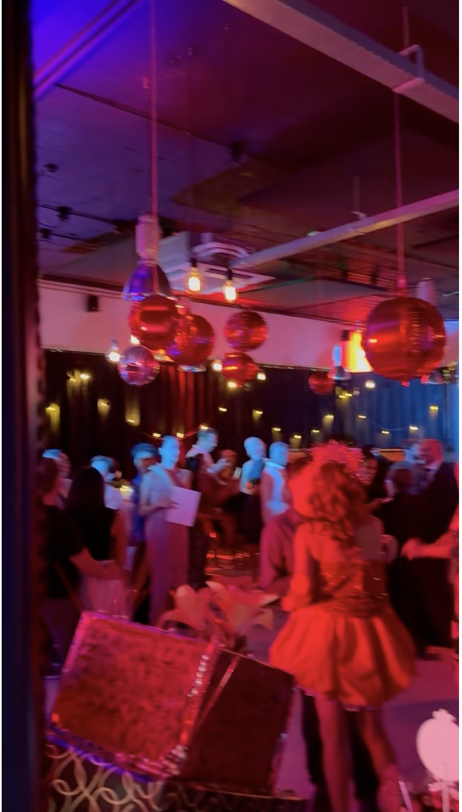

DE OPDRACHT
Maarten werkt met HEAR vooral voor dance-events en zakelijke evenementen. Voor Ronald Pronk verzorgde hij ook een privé-evenement voor 150 vrienden en relaties. Maarten en Ronald kennen elkaar al langer als DJ’s.

Maarten doet met HEAR vooral werk voor dance-events en zakelijke evenementen. Ik vroeg me af of hij ook een privé-evenement voor mij zou willen verzorgen. Dat wilde hij graag doen. Voor mijn feest met 150 vrienden en relaties veranderde hij een zaal die overdag vrij gewoon oogde in een kleurrijke dansvloer, met verschillende DJ’s.
Maarten werkt met HEAR vooral voor dance-events en zakelijke evenementen. Voor Ronald Pronk verzorgde hij ook een privé-evenement voor 150 vrienden en relaties. Maarten en Ronald kennen elkaar al langer als DJ’s.
Door een mix van washlights en zwarte doeken was er niks meer te zien van al het metaal in de ruimte en werd het geluid minder weerkaatst.
De ruimte werd voor één avond een levendige, kleurrijke dansvloer voor 150 vrienden en relaties, met meerdere DJ’s.
Draadloos sfeerlicht, full-colour

Rider-proof booth met CDJ-3000X en V10 of Euphonia

Hybride PA van RCF en Brooklyn Audio
Ga naar alle producten en diensten ↗
Lees ook: Wat kost audiovisuele ondersteuning van een evenement eigenlijk?
Zoiets voor jouw event?
Stel je vraag via WhatsApp→mailen mag ook